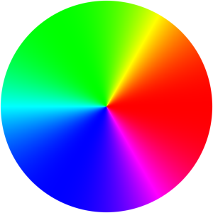
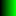
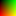
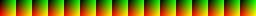
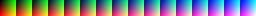
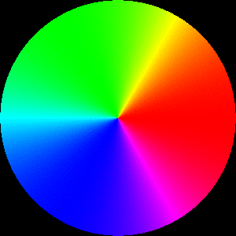
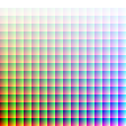
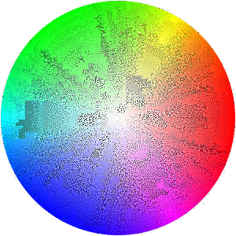
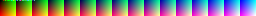

RGB444 変換で劣化しない画像を ImageMagick で作る
詳しい話は以下のサイトに任せるとして、
- Unityやるには必須！RGBA画像減色の基礎をまじめに書いてみた
PNGquantやImageMagickを使う
これらは画像変換の専用ソフトです。
注意して欲しいのはこれらのソフトにはPNG用の減色設定もあるので、
間違えてしまうとさっきのまでの話のように劣化してしまいます。
設定にご注意を。
このうち、ImageMagick での具体的なやり方です。
(追記) 2017/07/22
RGBA4444 は以下の方で説明します。
- RGBA4444 変換で劣化しない画像を ImageMagick で作る
ImageMagick の減色処理
ImageMagick の減色の方法は何種類か存在します。
- (a.) 色数を指定して減色
- (b.) ビット深度を変更して減色
- (c.) 残す色を指定して減色
通常は、ImageMagick の減色といえば (a.) の方式です。 アルゴリズムの詳細は以下のブログをご参考下さい。
- ImageMagick 改造入門 (その弐) 減色処理前編
Unity に RGBA4444 指定で PNG 画像を渡した場合は (b.) 相当の処理が動くようです。
$ convert -size 300x900 gradient:‘#FFF-#0FF’ -rotate 90
-alpha set -virtual-pixel Transparent +distort Polar 149 +repage
-rotate 90 -set colorspace HSB -colorspace RGB
gradient_hue_polar.png  $ convert gradient_hue_polar.png -depth 4 depth4.png
これだと画質劣化が目立つので、(b.) の処理が動いても色が変わらないよう、あらかじめ (c.) の方法で減色をする。というのが今回の手法です。
変換方法 (成功例) RGB444
テスト画像
先ほど作成した画像 gradient_hue_polar.png を利用します。
変換の準備
ディザで残したい色を持つパレット画像を作成します。
- RGB444 パレット作成
$ convert -size 16x16 gradient:black-red black-red.png $ convert -size 16x16 gradient:black-green1 -rotate 270 black-green.png  $ composite -compose plus black-red.png black-green.png black-red-green.png  $ convert -size 256x16 tile:black-red-green.png black-red-green-tiled.png  $ convert -size 16x16 gradient:black-blue -scale 100%x1600% -rotate 270 black-blue.png $ composite black-red-green-tiled.png -compose plus black-blue.png black-red-green-blue.png 
1
実行コマンド
-remap で画像ファイルを渡すと、その画像に含まれる色に限定してディザ処理をします。
$ convert gradient_hue_polar.png \
-dither Riemersma -remap black-red-green-blue.png \
rgb444.png

RGB444 だと色数が減るのでどのみち画質の劣化は避けられません。先ほどの変換をかけずに渡した場合よりマシという話です。
透明度を含む実験 (失敗例) RGBA4444
失敗例です。透明度を含む場合は減色が綺麗に出来ませんでした。
テスト画像
$ convert -size 300x900 gradient:'#FFF-#0FF' -rotate 90 \
-matte -channel a -fx "u*j/h" \
-alpha set -virtual-pixel Transparent +distort Polar 149 +repage \
-rotate 90 -set colorspace HSB -colorspace RGB \
gradient_hue_polar-transparent.png

変換の準備
- RGBA4444 パレット作成
$ convert -size 256x256 tile:black-red-green-blue.png
-matte -channel a -fx “u*floor(j/16)/h*17.1”
black-red-green-blue-transparent.png 
実行コマンド
$ convert gradient_hue_polar-transparent.png \
-dither Riemersma -remap black-red-green-blue-transparent.png \
rgba4444.png

課題
Unity でゲームを作る時のキャラ画像は輪郭の周りを透明にしたいでしょうから、RGBA4444 に対応しないと残念ながら実用的では無さそうです。 ImageMagick は透明度つき減色が苦手ですが、ここまで酷いのは何か理由がありそうなので、もう少し調べてみます。
参考 URL
- http://www.webtech.co.jp/blog/game-develop/unity/2562/
- http://www.imagemagick.org/Usage/canvas/#gradient_colorspace
注釈
- compose と tile を組み合わせて、”composite -size 256x16 -compose plus black-blue.png tile:black-red-green.png output.png” を実行したらゴミが入りました。 多分バグです。 [return]